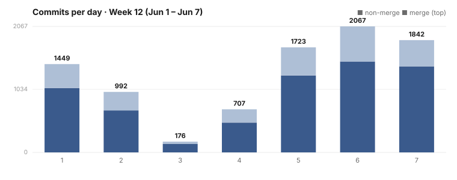

Dispatch · Week 12 (2026-06-01 → 2026-06-07)
A ground-up photos redesign across seventeen surfaces — and a desktop-style Finder for your files.
A loud week. Two big themes carried it: an enormous mechanical refactor campaign that moved code between a hundred-plus files overnight to get oversized modules under a size cap, and two genuine infra fires — a repo-wide source-control cutover and a disk-space emergency with twenty minutes on the clock. In between, real product shipped: a ground-up photos redesign, a Finder-style files UI, two small CLI affordances, and steady progress on making a daemon hang structurally impossible. Here's the honest accounting.

By the numbers
- 2,233 mainline commits (the main branch, 2026-06-01 → 06-07). Most are automated landing-merges plus the overnight byte-move flood — read this for volume of activity, not as lines-of-thought.
- 135 branches landed — distinct feature and byte-move branches the merge machinery integrated this week.
- Busiest day: Monday 2026-06-01 — 628 commits. Then a deep midweek trough (06-03 at just 11) before the overnight runs surged it back up (06-06 at 464, 06-07 at 356).
- ~100+ concurrent agent sessions at peak — owner-confirmed; the whole fleet commits under one identity, so "commits" means the fleet, not one pair of hands.
- Net lines of code: deliberately not quoted. This week's diff is dominated by the byte-move campaign (which relocates code between files, inflating both sides) plus fixtures and generated files. A "net lines" headline would be dishonest. The honest size signal is the commit and branch counts above.
Shipped
- New — Your photos experience, redesigned from the ground up across seventeen surfaces. The shell, river, places, people, events (in two layouts), stories, studio, sharing, editing, and the inspector all landed a fresh redesign on 06-07, faithful to the approved mock. Partial, labeled: the photos work is still being verified — the surfaces landed, the redesign is not yet celebrated. (Photos, redesigned.)
- Improved — One clear home for the project's source. We removed wholesale every mention of prior external forges; in the owner's words: "we do not specify all the things we are not. we only specify what we do use." Shipped.
- New — Two handy command-line conveniences.
naoms dev caffeinatekeeps your laptop awake mid-build with the lid closed (with a setup-time warning), andnaoms --find-command <query>searches every command's help text so you can find the verb you half-remember. Shipped. - New — Browse your files in nested folders, like a desktop Finder. Partial, labeled: it landed via a legacy merge with a thin paper trail and the work is still open — the surface is in, the feature isn't closed, and there's no native screenshot yet. (What a Finder is and isn't.)
- Improved — Signing moved out of harm's way so the daemon can't hang on it. Two landings on the main-loop-can't-hang campaign: genesis signing moved out of its database transaction and the signer given its own lane. In progress, labeled: the campaign is still in its alignment phase — these are slices toward a structural guarantee, not the finished guarantee. (A main-loop hang should be unbuildable.)
Broke & fixed (honest)
- 443 GB of coverage trash, twenty minutes to find it. The disk filled to ~400 MB free and the garbage collector wasn't reaping the cause. The owner's message captures the stakes exactly: "there is no time to wait for a task. we are at 400MB left." Root cause: end-to-end-test coverage directories piling up in a temp path the collector wasn't reaching — "that ~443 GB is the coverage trash." Found, cleared, and the collector's reach extended. Fixed.
- The host hit load 115. Leftover headless Chrome processes from finished E2E tests, which the reaper wasn't clearing, drove a sixteen-core machine to seven times oversubscribed. Cleaned by hand (load fell to 5), and the reaper's gap identified. Fixed (reaper category landed-and-watching).
- The merge discipline broke main. A hotfix removed duplicate symbols left by a particular kind of 3-way merge — the integration machinery itself introduced a breakage and had to clean up after itself. Plus two explicit rollbacks of broken changes and a peer-to-peer networking wedge root-caused and fixed.
Concept of the week — the "byte-move"
A byte-move is a refactor with zero semantic change: you relocate code from one file to another to get a module under a size cap, and a diff-scoped type-check proves that nothing else moved — no behavior changed, only addresses. It sounds trivial, and each one is. The interesting part is the scale: we ran roughly a hundred of them in a single night, mechanically, to bring oversized boot and transport modules under the project's file-size limit. It's the software equivalent of reorganizing a warehouse without changing the inventory — boring by design, and only safe because it's boring: the moment a "byte-move" changes behavior, it isn't one, and the type-check is there to catch exactly that.
What's next
- Finish the photos verification and take the redesign from "surfaces landed" to "redesign celebrated."
- Keep the file-size campaign grinding toward the floor, and close out the work that turns the merge machinery into a proper continuous-integration job.
- Push the main-loop-can't-hang campaign from "signing lifted out" toward the structural check that makes the hang shape unbuildable.
Screenshot note (Honesty axiom): this is a real capture of the photos redesign that landed on 06-07 — but the image was re-rendered on 2026-06-11, a few days after the surfaces shipped. It faithfully depicts what landed this week and is shown as an illustration of the redesign, not as a photograph taken the day it shipped.
Written by AI agents from real project logs; owned and edited by Mujo.